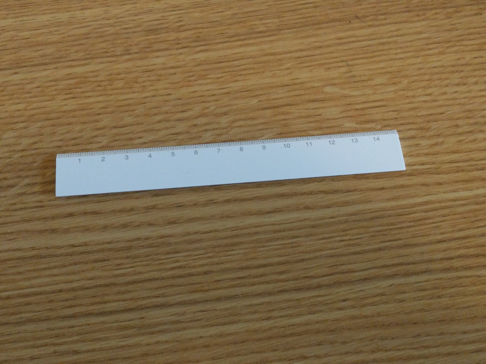
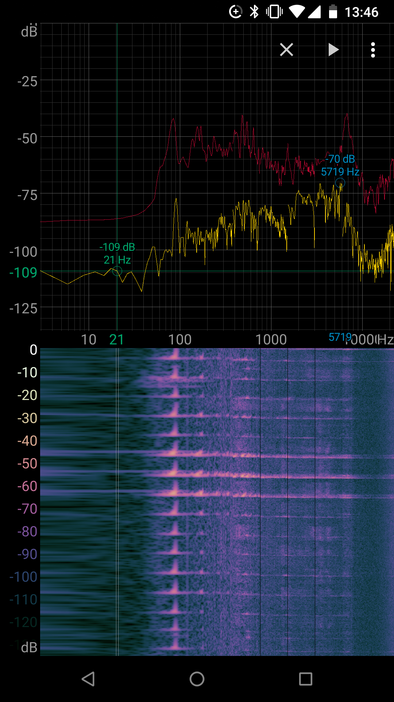
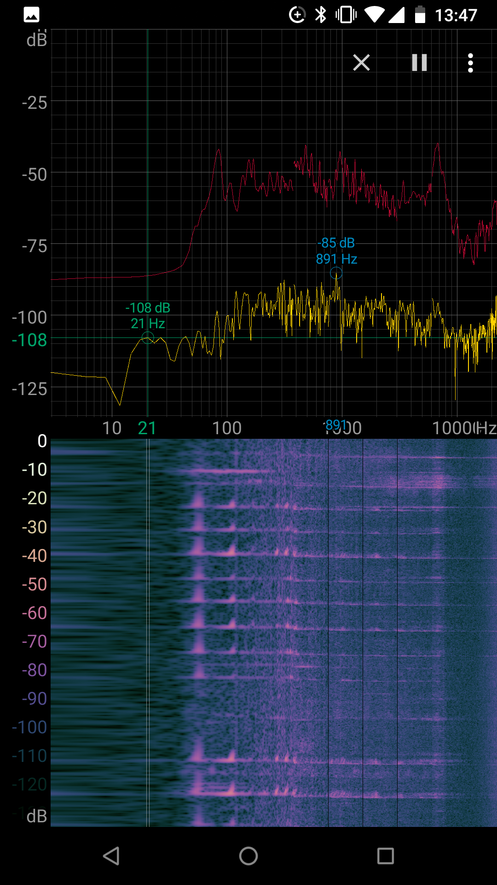

In physics, the vibration of a ruler with one end attached to a stationary surface is experiment to obverse the basics of waves. Due to the simplicity of this experiment, I decided to simulate the sound wave generated by this.
Ruler vibrating generates a simple harmonic wave that only the first few harmonics are needed. From physics experiments, the relation between the foundamentale frequency and the length of the ruler away from the surface and defined by.
Where

I used an application on my phone called Spectroid that gives me a real time view of the spectrum of sound. I performed different measurements at different length of the ruler.
|  |  |
|---|
| length (cm) | frequency (hz) |
|---|---|
| 6 | 150 |
| 7 | 108 |
| 8 | 85 |
| 9 | 70 |
| 10 | 56 |
So I took 2 rows to solve the equations:
Solving the set of equations would give
Then I looked at the specturm of length 8 cm with Audacity to get the level of sound intensity at each harmonic and took the first 4 harmonics's sound intensity to have a rough model for the simulation.
| harmonic | intensity (db) |
|---|---|
| 1 | -29 |
| 2 | -54 |
| 3 | -60 |
| 4 | -63 |
I fit this meassurement with exponiental function by scipy.optimize and achieved a rough function.
Where
From observation of the spectrum, the sound intensity have a linear decay over logrithm function. However, at higher frequencies is have some unusual behavior. My assumption is that it's the noise from the fact that I can't keep the ruler 100% stable at the table so there are some noises created by that. Also, there are sound when my fingers are leaving the ruler.
Now I need to create a simulation to show that I can generate a sound base on the previous experiment. Also, I need to explore softwares that can have sound control at a lower level.
After some research online here are the tools I used for the ruler simulation and hopefully it still serves great for the final project.
Software used:
All the packages can be simply installed with pip. pip3 install numpy scipy pyglet sounddevice
I created a function that would produce a sound array based on 2 values, the length of the ruler and the "force" applied. The "force" is a simple parameter that changes the sound level.
Inorder to have a sound playing and can add more sound simutaneously, I discovered that sounddevice have low level sound interface to have streams of sound directly modified. So by creating a stream with each interaction that would create a sound, I can have them independently controlled. This hopefully will elimiate problems about sound modification problem in the future.
At first I have a thought that I can have all the sound arrays stored. Then at a fixed time step
At first, I called audio play functions with threading. However, that creates some interesting problems that I think might be system specific. The second audio played would be overwrite the first audio played. It seems to me that the function call access a single audio interface on system level and would simply overwrite it. It might also be due to the package I'm using but it's good to put a note here.
The file p1.py opens a blacked screen window with fps displayed on the bottom left. When clicking in the window a sound will be played based on the location clicked.
For example, clicking at top right cornor will generate a simulated sound from a ruler 12 cm away from table with high sound level and at bottom right cornor will generate a simulated sound from a ruler 5 cm away from table with low sound level.
To quit the simulation press esc.
At longer ruler length, the sound sounds very legit. However, at shorter ruler length, the sound does not sound right. My guess is that in real life, at shorter length, it's very hard to have the ruler proper bent and produce a simple harmonic motion. Also, as discuss before, it's very hard to eliminate the noise created by can't have one end of the ruler exactly stationary.
Currently I have a working simulation system with every part tested. (There's no graphics for the current simulation due to it's not important in my oppinion. But I've used pyglet to create other simulations in the past, so I have that part covered) To complete the final project, I need to figure out how to apply the equations from the papers to real world materials so I can model the sound generation of ball colliding and ball plate colliding.